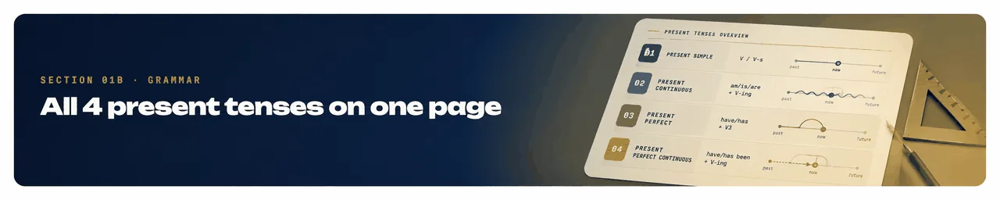
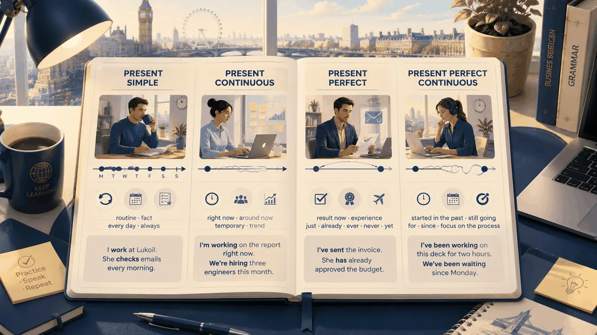
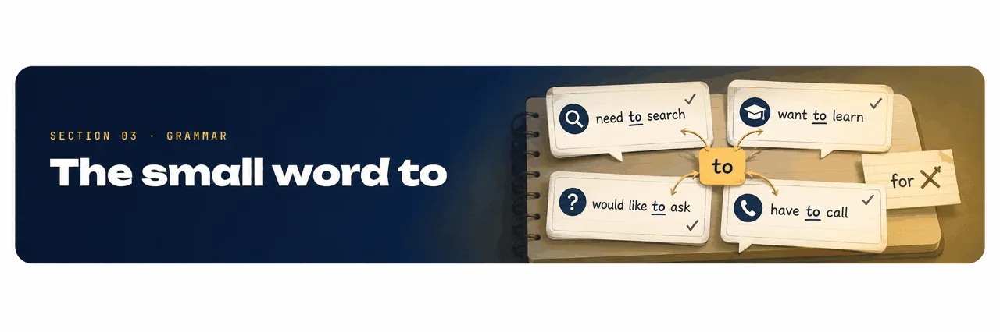
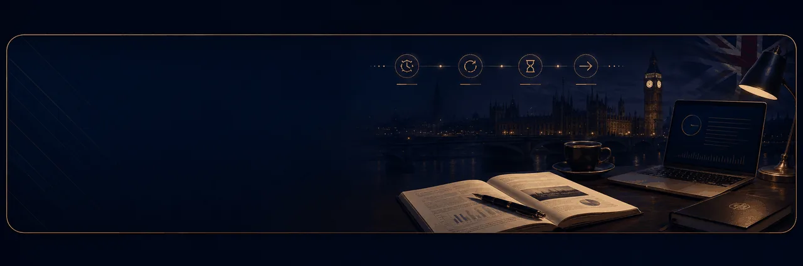
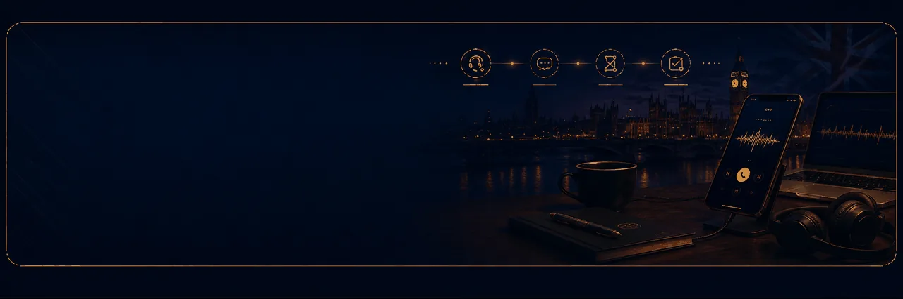
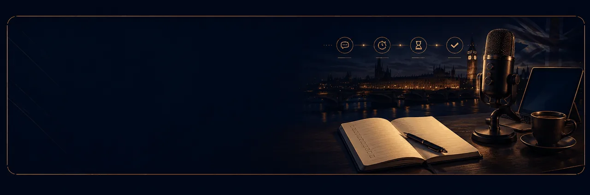

Ten short blocks — all four present tenses (Simple · Continuous · Perfect · Perfect Continuous), the little word to, articles a / the / —, six survival lines you actually say, and your full business vocabulary. No pressure. Speak, tap, repeat.
Everything you already know from all three sessions — 45+ words. Trial words (attention · fatigue · IELTS study) + 30 business words + participles + 12 irregular verbs. Tap a card to flip: front = word, back = example in a present tense.
👆 tap card · 🎤 read example aloud
recognize
I recognize this word from the trial.
considered
Bocconi is considered a top school.
captivated
I was captivated by the campus.
fascination
Her fascination with numbers runs deep.
effortless attention
Kids give effortless attention to games.
effort
It takes real effort to focus.
fatigue
Study fatigue is real.
causes
Stress causes fatigue.
intensely focused
He is intensely focused on the task.
distracted
I am distracted today.
irritable
Fatigue makes people irritable.
engages
The teacher engages the whole class.
soothes
Music soothes her.
certain
I 'm certain about it.
submissions
Deadline for submissions is Friday.
banking
She works in private banking.
crediting
Our crediting policy is conservative.
finance
He has studied corporate finance for two years.
management
Project management requires patience.
sales
Our sales have grown 15% this quarter.
logistics
Logistics is the backbone of trade.
enterprise logistics
Enterprise logistics covers warehouses and shipping.
corporate economics
I work in the field of corporate economics.
economic sphere
She has been working in the economic sphere since 2021.
schedule
Let me check my schedule.
a tutor
My tutor told me to focus on speaking.
education
Higher education opens doors.
do the tasks
You have to do the tasks before class.
pace
She works at her own pace.
speed
Reduce your speed in the city.
split
Let's split the bill.
share
Can I share your notes?
divide
Divide the cake into eight pieces.
supplies
Office supplies are running low.
labelling
Labelling errors cause shipping delays.
intelligible
Speak slowly to stay intelligible.
response
Choose the best response.
rubric
Read the rubric before writing.
band score
Target band score — 6.5.
elaboration
Examiners reward elaboration.
ATM machine
There is an ATM machine on the corner.
road markings
Follow the road markings carefully.
circle
Take the second exit at the circle.
oncoming traffic
He was fined for going into oncoming traffic.
hiking
Hiking is a great way to clear your head.
📚 Bonus vocab from Workbook drills — say each one in a sentence: charming · tiring · exciting · booming · honest. Irregular verbs from Workbook 02 (know all three forms): go / went / gone · speak / spoke / spoken · take / took / taken · eat / ate / eaten · write / wrote / written · give / gave / given · meet / met / met · read / read / read · see / saw / seen · do / did / done · begin / began / begun · find / found / found.
💼 Vocab in action · three drills · every deck word plays once
Drill 1 · Meaning MCQ · 15 items
Tap the closest meaning. Green appears after your tap.
1. recognize
✅ recognize = to know something/someone from before.
2. considered
✅ considered = generally thought of as.
3. captivated
✅ captivated = pulled in emotionally.
4. fascination
✅ fascination = deep interest.
5. effortless attention
✅ effortless attention = focus that happens naturally.
6. intensely focused
✅ intensely focused = fully in one task.
7. distracted
✅ distracted = pulled away from the task.
8. irritable
✅ irritable = quick to get annoyed.
9. engages
✅ engages = catches and keeps attention.
10. soothes
✅ soothes = calms down.
11. certain
✅ certain = sure about something.
12. intelligible
✅ intelligible = understandable.
13. response
✅ response = answer or reply.
14. rubric
✅ rubric = the criteria a task is judged by (IELTS writing).
15. band score
✅ band score = the IELTS number that decides your level.
Drill 2 · Business gap-fill · drag → gap · 15 items
Drop the right business word from the shuffled bank. Green tick = correct.
1
I work in ___ — my area is corporate strategy.
2
Our ___ have grown by fifteen percent this quarter.
3
Enterprise ___ covers warehouses and shipping.
4
Let me check my ___ and I'll get back to you.
5
Project ___ requires patience and clear priorities.
6
Deadline for ___ is Friday afternoon.
7
She works in private ___.
8
Our ___ policy is conservative.
9
I work in the field of ___.
10
She has been working in the ___ since 2021.
11
My ___ told me to focus on speaking.
12
Higher ___ opens doors — and it's expensive.
13
You have to ___ before every class.
14
Examiners reward ___ — added detail after the main answer.
15
___ is what runs warehouses, trucks and labelling in a big group.
Drill 3 · Sentence-fill MCQ · 15 items
Tap the vocab word that fits the blank — everyday and IELTS context.
1. It takes real ___ to focus on hard tasks.
✅ effort — hard work of focusing.
2. Study ___ hits me at four p.m.
✅ fatigue — deep tiredness.
3. Stress ___ fatigue and irritability.
✅ causes — leads to.
4. She works at her own ___ — she never rushes.
✅ pace — her rhythm of work.
5. Reduce your ___ in the city — the limit is fifty.
✅ speed — how fast you go.
6. Let's ___ the bill three ways.
✅ split the bill — natural collocation for restaurants.
7. Can I ___ your notes for a minute?
✅ share — borrow / use together.
8. ___ the cake into eight equal pieces.
✅ divide — cut into equal pieces (maths word).
9. Office ___ are running low — we need more paper.
✅ supplies — office consumables.
10. ___ errors on boxes cause shipping delays.
✅ labelling — putting the right sticker/name on a box.
11. There is an ___ on the corner if you need cash.
✅ ATM machine — cash point.
12. Follow the ___ carefully near the roundabout.
✅ road markings — painted lines on the road.
13. Take the second exit at the ___ .
✅ circle — the round intersection (roundabout).
14. He was fined for going into ___ .
✅ oncoming traffic — cars driving towards you.
15. ___ is a great way to clear your head on weekends.
✅ hiking — walking in nature.
🎤 Oral Practice · 3 questions · use your vocab live
Pick three words from the deck that describe your best working day. Say why in one sentence each.
Pick two words from the deck that describe your worst working day. Say why.
Which word from the deck did you know already, and which one is completely new to you today?
Section 01
Warm-up · your usual day
Drop the right word from your vocab into each gap. The bank at the bottom is shuffled — don't just take them in a row. Then say the whole sentence out loud.
✍️ drag word → gap · ✅ auto-check · 🎤 then say out loud
1
I work in ___ — my area is corporate strategy.
2
Every morning I check my ___ before the first meeting.
3
My working ___ is fast, so I stay focused all morning.
4
When I feel ___, I take a short break and reset.
5
By afternoon a bit of ___ kicks in.
6
It takes real ___ to keep the numbers clean.
7
Our ___ have grown this quarter.
8
Enterprise ___ covers warehouses and shipping in our group.
9
On weekends I go ___ — it clears my head for Monday.
Now read these 9 sentences out loud — one after another, no pause. Read them like a short talk about your usual day.
45–60 секунд, медленно. Смотри в текст, не подглядывай вверх.
I work in finance — my area is corporate strategy.
Every morning I check my schedule before the first meeting.
My working pace is fast, so I stay focused all morning.
When I feel distracted, I take a short break and reset.
By afternoon a bit of fatigue kicks in.
It takes real effort to keep the numbers clean.
Our sales have grown this quarter.
Enterprise logistics covers warehouses and shipping in our group.
On weekends I go hiking — it clears my head for Monday.
Your speech will appear here.
🎤 Oral Practice · 3 questions · answer aloud
Now describe your usual day again without the script — five slow sentences, from memory.
What is one small ritual you always do at work that no one notices?
Which part of your day gives you the most energy — morning, mid-morning, or after lunch?

Section 01b
All four Present tenses on one page
One line for each tense — shape, when to use it, and a real business sentence. Open, glance, keep going.
Tense
Shape
When to use
Real sentence
Present Simple
V / V-s
routine · fact · every day · always / usually / sometimes
I work at Lukoil. She checks emails every morning.
Present Continuous
am/is/are + V-ing
right now · around now · temporary · trend
I'm working on the report right now. We're hiring three engineers this month.
Present Perfect
have/has + V3
result now · life experience · just / already / ever / never / yet
I've sent the invoice. She has already approved the budget.
Present Perfect Continuous
have/has been + V-ing
started in the past · still going · for / since · focus on the process
I've been working on this deck for two hours. We've been waiting since Monday.
🧠 Quick test · which tense fits? (tap the correct answer)
1. “Today I ______ three submissions.”
✅ Present Perfect — result now, часто «сегодня», «уже».
2. “Right now Marco ______ the elaboration for question 4.”
✅ Present Continuous — действие прямо сейчас, «right now».
3. “I ______ in enterprise logistics since 2019.”
✅ Present Perfect Continuous — процесс, начался в прошлом, ещё идёт (since / for).
4. “She usually ______ the whole class in 5 minutes.”
✅ Present Simple — рутина / часто / «usually».
🎤 Oral Practice · 3 questions · one for each tense
Give me one sentence in Present Simple about your job.
Give me one sentence in Present Continuous about a project you are preparing this week.
Give me one sentence in Present Perfect Continuous about a skill you have been building for months.
Overview
Four Present tenses at a glance
Before we drill each tense one by one — here is the whole map. Timeline, trigger words, a real business example for each. Screenshot this page and keep it near your desk.

🎤 Oral Practice · 3 questions · scan the map, answer aloud
Look at the map — pick one tense and say when you use it. In your own words.
Give a real business example from your job — one sentence in Present Perfect (result now).
Give a real business example — one sentence in Present Perfect Continuous (started in the past, still going).
Section 02
Present Simple, alive
Everyday, always, usually — that is Present Simple. Drop the right verb into each blank. Watch the tricky he / she / it: they add -s.
✍️ drag word → gap · ✅ auto-check
1
I ___ at Lukoil.
2
She ___ in the finance team.
3
We ___ a meeting every Monday.
4
He ___ a lot of tasks today.
5
They ___ at seven every day.
6
My colleague ___ coffee, not tea.
7
I ___ my email in the morning.
8
The boss ___ me twice a week.
9
You ___ the answer.
10
She ___ Italian very well.
11
We ___ in Moscow.
12
He ___ near the office.
🎤 Oral Practice · answer aloud · use Present Simple
What do you do every morning before you open your laptop?
Which team do you work with — and who reports to whom?
How often does your boss call you during a normal week?
Section 02b
Present Continuous — right now
Right this moment, this week, this project. Formula: am / is / are + verb-ing. Notice: I am working, not I work. Vocabulary from your business list (banking · sales · management · logistics).
✍️ pick the -ing form · ✅ auto-check
1
I ___ on a new report this week.
2
Our team ___ the quarterly presentation.
3
Marco ___ the client right now.
4
We ___ a new product in September.
5
The boss ___ the investors today.
6
Sales ___ in the northern region.
7
I ___ for the IELTS exam.
8
She ___ her master's application.
9
They ___ the office to a new location.
10
The logistics team ___ the shipment.
📌 quick rule: Simple = every day / usually. Continuous = right now / this week.
🎤 Oral Practice · answer aloud · use Present Continuous
What are you working on this week at your desk?
Which project is your team preparing right now?
What deal or negotiation is heating up around you these days?
Section 02c
Present Perfect — done, but the result is here
Something happened before now, and the result matters today. Formula: have / has + V3 (past participle). Use with already · yet · just · ever · never · this week · for 3 years · since 2023.
Present Continuous → Present Perfect · when the action stops, the result stays
👇 pick have/has + V3 · match to context
1
I ___ the report. (result: it's ready now)
2
Marco ___ the contract already.
3
We ___ together for three years.
4
She ___ the file. (a minute ago)
5
I ___ to Milan.
6
The boss ___ the budget.
7
They ___ the shipment yet.
8
Sales ___ since January.
9
I ___ English for two years.
10
He ___ to a new department.
📌 tell apart: Simple past — yesterday / last week / in 2020. Perfect — result is now / just / already / yet / for / since.
🎤 Oral Practice · answer aloud · use Present Perfect
What have you already finished today at work?
Have you ever presented to a foreign client? Which one?
Which decision has your boss approved this week?
Section 02d
Present Perfect Continuous — doing since, still doing
Started in the past, still happening now, and the process matters (not the result). Formula: have / has been + verb-ing. Use with for · since · all day · lately.
👇 pick have/has been + -ing
1
I ___ on this deal for two weeks.
2
Sales ___ since spring.
3
She ___ English for six months.
4
We ___ for the client's reply all morning.
5
Marco ___ customers all day.
6
I ___ for the interview since Monday.
7
They ___ the numbers for hours.
8
The team ___ overtime lately.
📌 subtle: Perfect (I have worked here for 3 years) — fact. Perfect Continuous (I have been working here for 3 years) — process, activity. Overlap is normal.
🎤 Oral Practice · answer aloud · use Present Perfect Continuous
How long have you been working in corporate economics?
What have you been trying to fix in your workflow lately?
Which skill have you been improving for the last few months?
Section 02e
Mix drill · pick the right present tense
All four in one place: Simple · Continuous · Perfect · Perfect Continuous. Choose the one that fits the time signal.
👆 tap · get feedback
Every Monday morning we a team meeting.
Look — Marco on the phone right now.
I for this company since 2021.
She on the report all morning — she looks tired.
We the deal already. It's done.
Our logistics team shipments every day.
🎤 Oral Practice · mix all four tenses · answer aloud
Right now — what are you doing at your desk this exact moment? (Present Continuous)
Today — what have you already finished that you're proud of? (Present Perfect)
For months — what skill have you been building slowly? (Present Perfect Continuous)

Section 03
The small word to
After need · want · have · would like — always to + verb. Never for. Fix the sentences: tap the broken part and I will show the right form.
👇 tap the broken bit
1
We need search a place. → we need to search a place.
2
I want learn English.
3
She has finish the report.
4
I'd like have coffee, please.
5
He wants move to Milan.
6
We need for make a fire.
7
I have call my boss.
8
They want for study abroad.
9
You need sign the paper.
10
I'd like ask a question.
11
She wants leave early today.
12
We have for remind him.
13
I need for check the email.
14
He wants speak to you.
15
I'd like book a table.
16
You need relax.
17
She has send the file today.
18
We want for travel in July.
19
I have work late tonight.
20
Can I to ask a question?
🎤 Oral Practice · 3 questions · use need / want / would like / have + to
Name one thing you need to finish this week. Say the full sentence.
Name one thing you would like to learn this year. Say the full sentence.
Name one thing you have to do tomorrow morning — the boring one. Say the full sentence.
Section 04
a · the · nothing
Three rules only. a = one of many, first time. the = the exact one we know. — = things you cannot count (coffee, money, water, time). Tap the right choice for each blank.
👆 tap: a · the · — · get feedback
I have new colleague. His name is Marco.
colleague I mentioned yesterday is here.
I drink coffee every morning.
Can I have coffee, please? (in a café)
We need money for the trip.
She has question.
Open door, please. (only one door here)
I like music.
🎤 Oral Practice · 3 questions · practise a / the / — live
Describe the room you're sitting in right now — use at least three articles (a, the, and one no-article noun like money / time / coffee).
What did you order the last time you were in a café? Two sentences: what you asked for and how it was.
What did you study at university that still helps you at work? Say it with at university and one the-noun.
Section 05
Six business lines you actually say — tenses in action
Six adult phrases from your real working day. Each one lives on a different tense from today's lesson. Say each line out loud twice — slow first, natural second. Feel where the tense signal sits.
🎙 read → speak · x2 each · mark the tense in your head
🤝 Present Simple · self-intro
I work in the strategy team at Lukoil. I usually handle the Milan and Rome accounts.
Present Simple = fact about your job. at + company, in + team. Trigger word: usually.
📊 Present Continuous · this-week project
Right now I'm preparing the Q3 deck. This month we're also hiring three engineers.
Present Continuous = right now / this month. Not I prepare — say am preparing. Triggers: right now, this month.
📧 Present Perfect · status update
I've already sent the draft. I haven't heard back from the client yet.
Present Perfect = result now. Use already / yet. Never yesterday or at 3 pm — those go with Past Simple.
⏳ Present Perfect Continuous · why it's taking so long
I've been working on this deal for two weeks. We've been waiting for their reply since Monday.
Perfect Continuous = process still going. for + duration, since + a point in time. Focus is on the effort, not the result.
🕓 Small polite request · need to
I need to leave in five minutes — could you send me the file by then?
After need · want · would like · have — always to + verb. Never for. Could you = polite standard for adults.
🗓 Daily stand-up · mixing tenses
I have three submissions today. Two are in progress and one is already done.
Three tenses in one report: I have (Simple, fact) · are in progress (Continuous, right now) · is done (Perfect, result). This is exactly how a stand-up sounds.
🎤 Oral Practice · 3 questions · use the six-line shapes
Say your own version of the self-intro — one Present Simple sentence about where and how you work.
Give your own daily stand-up in 3 sentences: what you're doing now, what you've already finished, what you've been working on for a while.
Ask a colleague a polite request with need to — something you really need this week.

📖 Did you know?
Read 200 English words a day and in three months you gain a full IELTS band. Reading trains grammar, vocabulary and rhythm — all at once.
Section 07
Reading · A day at the office
Short business text. Read it once at your pace, then answer four multiple-choice questions. All four Present tenses live inside.
📖 read → tap answer · auto-check
Timofey works at Lukoil in the strategy team. Every morning he checks his email and drinks a large flat white on the way to the office. Today he is preparing a big presentation for a client from Milan — the meeting starts in three hours and he still is finishing the numbers slide.
He has already sent the draft to his boss, but the boss hasn't replied yet. Marco, his colleague, has been working on the same file since Monday and looks tired. “I have been checking these figures for two hours,” Marco says. “Could you help me?”
Timofey nods. Right now they are opening the spreadsheet together. In half an hour the client call begins. Everything is going to be fine — they have handled harder days before.
1. Where does Timofey work?
✅ “Timofey works at Lukoil in the strategy team” — Present Simple, a fact about his job.
2. What is Timofey doing at the moment of the story?
✅ “Today he is preparing a big presentation” — Present Continuous = right now.
3. What has Timofey already done?
✅ “He has already sent the draft to his boss” — Present Perfect = result now.
4. How long has Marco been checking the figures?
✅ “I have been checking these figures for two hours” — Present Perfect Continuous = process, still going, focus on duration.
🎤 Oral Practice · 3 questions · your version of the story
What is one thing YOU are preparing this week at work — right now, still in progress?
What have you already finished today that Timofey (in the story) hasn't?
Whom have you been checking numbers or drafts with lately? For how long?

🎧 Did you know?
An average business call uses all four Present tenses in the first thirty seconds. Listening catches tense signals — since, already, right now — faster than translation.
Section 08
Listening · Marco calls Timofey
Short business call. Listen twice — first for the story, second for the detail. Open the script only after you tried both times.
🎧 listen → answer · script hidden
🎧 British male · Brian · ~45 sec
📜 Transcript · Marco calls Timofey (~45 sec)
Marco: Hi Timofey, are you busy right now?
Timofey: Yes, I'm working on the client deck. What's up?
Marco: I've been trying to open the numbers file since nine, but it keeps crashing. Have you saved a backup?
Timofey: I've already sent the backup to your email. Check the folder “Milan · draft 3”. I usually drop everything there.
Marco: Perfect. Have you spoken to the client today?
Timofey: Not yet. They haven't confirmed the time. I'm waiting for their reply.
Marco: Got it. I'll open the file now and call you back in ten minutes.
1. What is Timofey doing when Marco calls?
✅ “I'm working on the client deck” — Present Continuous, right now.
2. Since when has Marco been trying to open the file?
✅ “I've been trying to open the numbers file since nine” — Present Perfect Continuous + since.
3. Has Timofey already sent the backup?
✅ “I've already sent the backup to your email” — Present Perfect, result now.
4. Where does Timofey usually keep drafts?
✅ “I usually drop everything there” — Present Simple, routine (“usually”).
🎤 Oral Practice · 3 questions · your business calls
When was the last time a colleague called you asking for a file? What did you tell them?
Which folder or system do you usually keep drafts in?
Have you spoken to a client today? If yes — in one sentence, what was the topic?

🎙 Little truth
Sixty seconds of your own English beats sixty minutes of someone else's. Speaking turns knowledge into muscle memory — don't wait to feel ready.
Section 09
Speaking · your day in all four tenses
One free monologue, 10–12 sentences, about your work this week. You must use each of the four Present tenses at least once. Slow, natural, out loud.
🎤 speak 45–60 sec · mic-drill
Talk about your working week — right now, this week, and what you've done so far. Cover all four tenses (see the checklist).
Present Simple — one thing you do every day. “I usually start work at nine.”
Present Continuous — what you're doing right now / this week. “Right now I'm preparing a report.”
Present Perfect — one thing you have already done today. “I've already sent two emails.”
Present Perfect Continuous — one process still going. “I've been working on this project since Monday.”
Try to hit 10–12 sentences. If the mic loses you, take a breath and continue — the counter is at the bottom of the page.
Your speech will appear here.
📜 Sample answer (open after you tried)
I usually start my day at eight o'clock and I always drink a large flat white on the way. My office is in central Moscow, so I take the metro every morning. Right now I am preparing a big presentation for a Milan client — the meeting is on Friday and I am still finishing the numbers slide. This week we are also interviewing three new engineers, which is unusual for us.
I have already sent the draft to my boss, but he hasn't replied yet. I have also spoken to the client twice this week. I've been working on this project since Monday, so I feel a bit tired, but I have been learning a lot about their business. In the evening I usually go for a short walk to reset. That is my week — busy, but under control.
Twenty to twenty-five minutes. Slow, out loud, all from your own vocab. Nothing new — only the words you already have. Blocks A–G are the essentials; H, I, J are the Murphy-style grammar deep-dive.
A · Vocab drill — match your word to the meaning (10 items · tap the right meaning)
1. captivated
✅ captivated = pulled in emotionally.
2. fatigue
✅ fatigue = deep tiredness.
3. intensely focused
✅ intensely focused = fully in one task.
4. distracted
✅ distracted = pulled away from the task.
5. engages
✅ engages = catches and keeps attention.
6. soothes
✅ soothes = calms down.
7. submissions
✅ submissions = things you submit / hand in.
8. elaboration
✅ elaboration = extra detail after the main answer.
9. intelligible
✅ intelligible = understandable.
10. oncoming traffic
✅ oncoming = coming towards you.
B · Gap-fill · drag your word into the sentence (10 items · shuffled bank)
1
I work in ___ — my area is corporate strategy.
2
Our ___ have grown fifteen percent this quarter.
3
Enterprise ___ covers warehouses and shipping.
4
Let me check my ___ and I'll get back to you.
5
By 4 p.m. a bit of ___ kicks in.
6
I try to stay ___ for the whole morning block.
7
Please follow the road ___ near the roundabout.
8
On weekends I go ___ to clear my head.
9
He is very ___ — you can trust his numbers.
10
This project is ___ — a lot is happening.
C · Discussion · 6 normal questions (speak out loud, use your vocab naturally)
1. What do you do for a living?
2. What's your working day usually like?
3. When do you feel the most tired at work?
4. What helps you stay concentrated on hard tasks?
5. Who is your favourite colleague and why?
6. What do you like doing on weekends?
D · Fix the small word (10 items · tap: to · for · —)
1. I want speak English better.
2. She has finish this report today.
3. We need book a hotel.
4. I'd like have some tea.
5. He wants visit Milan next year.
6. They need send the file.
7. Can I ask a question?
8. I have leave in five minutes.
9. She'd like take a break.
10. You need relax more.
E · a / the / — (6 items · tap the right article)
1. I have new task from the boss.
2. task is not easy.
3. I drink tea every evening.
4. Could I have tea, please? (in a café)
5. Open window, please. (only one window)
6. time is money.
F · Speaking · your usual working day (offline, use your vocab)
Record a 60-second voice message. Answer: What do you do every day at work? Use nine sentences (like the Warm-up), each one with at least one word from your vocab list (finance / crediting / sales / logistics / schedule / focused / fatigue / hiking / honest). Slow pace. Send the audio to Maria.
G · Watch & catch (optional)
Pick one short YouTube video on any topic you like — maximum three minutes, native English. Write down three sentences you hear that use need to / want to / have to. Just three. Bring them to the next lesson.
🧠 Murphy-style deep dive · grammar drills · blocks H–J
H · Multiple choice · pick the right present tense (15 items · tap answer, live feedback)
1. Marco usually the client every Friday.
2. Right now the team the Q3 numbers.
3. I in banking since 2019.
4. She on this deal all morning — she looks exhausted.
5. We already the invoice this morning.
6. Every quarter our sales by five percent.
7. The boss three important calls right now.
8. Timofey for IELTS for six months.
9. — Where's Marco? — He to the pharmacy.
10. Our office near Belorussky station.
11. They the new office design for weeks now.
12. I have never to Milan.
13. This month we a new pricing model.
14. Our logistics team shipments every single day.
15. She the file — check your inbox.
I · Gap-fill · drag the correct verb form into the gap (12 items · shuffled bank)
1
I ___ in enterprise logistics since 2019.
2
Marco usually ___ clients on Friday afternoon.
3
Right now Anna ___ the elaboration for question four.
4
We ___ the shipment from Milan yet.
5
My colleague ___ coffee, not tea.
6
She ___ IELTS for the past three months.
7
Look, the boss ___ the investors in the glass room right now.
8
Our sales ___ by fifteen percent this quarter.
9
Timofey ___ three submissions.
10
Every morning I ___ my schedule before the first meeting.
11
They ___ for the client's reply all morning.
12
The new office ___ closer to my flat, which is nice.
J · Correct the mistake · pick the fixed version (10 items · tap answer)
1. ❌ I am working here since 2019.
2. ❌ She has been finished the report already.
3. ❌ Every day Marco is calling three clients.
4. ❌ We are having a meeting every Monday morning.
5. ❌ Right now the boss have three phone calls.
6. ❌ I already send the invoice this morning.
7. ❌ They working on the deal for two weeks now.
8. ❌ My team is preparing the report for three days.
9. ❌ Look — Marco is call the client right now.
10. ❌ She goes to Milan just — she left an hour ago.
I · verb in brackets: 1. have worked / have been working · 2. calls · 3. is writing · 4. have not received / haven't received · 5. drinks · 6. has been studying · 7. is meeting · 8. have grown · 9. has just finished · 10. check · 11. have been waiting · 12. is.
J · correct the mistake: 1. am working → have been working (since 2019). 2. has been finished → has finished. 3. is calling → calls (every day). 4. ✓ correct — or "we have a meeting" (both accepted). 5. have → is having / has. 6. send → have sent (this morning · result now). 7. working → have been working. 8. is preparing → has been preparing (for three days). 9. is call → is calling. 10. goes just → has just gone.
Section 10
After lesson · чек-лист домашки и три коротких дриля
По разбору твоего свободного письма 06.07 — три места, которые чиним следующим блоком. Ниже: чек-лист для переписывания «My usual day» и три коротких упражнения на каждую тему. Всё интерактивное — зелёный = верно, красный = попробуй ещё.
📋 Домашка на Trainer-04 · чек-лист
Все глаголы в Present Simple (не «will start», не «changing»).
После he/she/it/имени/компании — окончание -s: My day starts · She works · The team meets.
Артикль перед гласной — an: an hour · an interview.
Устойчивые сочетания без артикля: at work · go home · have breakfast.
Формы прошедшего от неправильных: came (не «comed»), taught (не «teached»), took (не «take»).
For + отрезок времени: for a year · for three years · for two weeks.
Порядок притяжательных: our new schedule, а не «the new our schedule».
Задание: перепиши текст «My usual day» по чек-листу выше и пришли в чат до следующего занятия.
Section 10a
Правило -s для he / she / it · 10 предложений
Present Simple. Если подлежащее — one person / one thing / one company / one team — глагол получает окончание -s. Никаких других изменений.
1. My boss ______ in Milan.
✅ boss = one person (he) → works.
2. She ______ her email every morning.
✅ she → checks. «Every morning» — рутина, Present Simple.
3. Marco ______ the presentation on Fridays.
✅ Marco = one person → prepares.
4. The team ______ every Monday at 10.
✅ the team = one group (it) → meets.
5. Our company ______ enterprise logistics.
✅ company (it) → covers.
6. It usually ______ me two hours.
✅ it → takes.
7. My schedule ______ every week.
✅ schedule (it) → changes.
8. The boss ______ me on Wednesdays.
✅ отрицание для he/she/it → doesn't + инфинитив (без -s).
9. She ______ English well.
✅ she → speaks.
10. He ______ hard every day.
✅ he → try → tries (y → ies после согласной).
🎤 Oral Practice · 3 вопроса вслух
Give one sentence about your boss in Present Simple (use -s).
Give one sentence about your team — what it does every Monday.
Give one sentence about your company — what industry it covers.
Section 10b
Артикли a / an / — / the · 8 предложений
Правило одно: a / an — новое, счётное. the — уже понятно о чём. — (без артикля) — с устойчивыми выражениями (at work · go home · have breakfast) и с неисчисляемыми (supplies, information, work).
1. I need ______ hour to finish the report.
✅ hour → звук [aʊ], гласный → an.
2. After the meeting I go ______.
✅ go home / at home / come home — устойчивое, без предлога и артикля.
3. I'm ______ work until seven today.
✅ at work — устойчивое сочетание. Без артикля.
4. Every morning I ______ breakfast at seven.
✅ have breakfast / lunch / dinner — устойчивое (не «do», не «make»).
5. We take ______ every Monday from the warehouse.
✅ supplies — неисчисляемое, никакого «a».
6. The boss has approved ______ new schedule.
✅ Порядок: our + adjective + noun. Никаких «the» перед «our».
7. In Russia we don't have foreign ______.
✅ Множественное число без артикля («в целом», «в принципе»).
8. I have been working here ______ one year.
✅ for + отрезок времени. since + точка отсчёта.
🎤 Oral Practice · 3 вопроса вслух
Give one sentence with an hour about your morning.
Give one sentence with at work / go home about your typical Monday.
Give one sentence with for + отрезок времени about your current job («I have been working here for…»).
Section 10c
Неправильные глаголы · формы V2 и V3 · 8 предложений
Раньше отрабатывали 12 глаголов. Здесь 8 самых частых из твоего письма — те, где ты пока ставишь «-ed» вместо второй формы.
1. When I ______ to the office, everyone was already there.
✅ come → came → come. Past Simple → came.
2. She ______ me how to write emails last year.
✅ teach → taught → taught.
3. I ______ your message this morning.
✅ get → got → got.
4. Last week I ______ two important calls.
✅ make → made → made.
5. He has ______ the company after ten years.
✅ leave → left → left. После «has» — форма V3 (совпадает с V2 здесь).
6. They ______ the invoice yesterday.
✅ pay → paid → paid.
7. I ______ the box on the shelf.
✅ put → put → put. Все три формы одинаковые.
8. The boss ______ that the meeting was postponed.
✅ say → said → said. Плюс: «said» — без прямого дополнения. «Said me» ❌ → «told me» ✓.
🎤 Oral Practice · 3 вопроса вслух
Say one sentence with came — when you arrived somewhere last week.
Say one sentence with taught / learnt — a colleague who taught you something.
Say one sentence with made — a decision or a call you made at work.
Section 10d
Устойчивые сочетания (коллокации) · 8 выборов
Одна из причин, почему письмо звучит по-русски — не «неправильно», а именно «не по-английски». Английский любит устойчивые пары. Ниже — восемь пар из твоего письма, которые исправляем сейчас, чтобы потом писались автоматом.
1. Every morning I ______ a coffee before work.
✅ have breakfast / have coffee / have lunch — устойчивое. «Do» и «make» здесь по-английски не звучат.
2. My team has been ______ the internal system for three weeks.
✅ improve processes / improve a system — регулярное развитие. Fix — «чинить сломанное».
3. I've been working ______ this company for one year.
✅ work at + компания. Или: I work for + компания.
4. She works ______ the finance team.
✅ work in + отдел / индустрия. In finance / in HR / in logistics.
5. He has ______ a big decision last week.
✅ make a decision — устойчивое.
6. I ______ the report yesterday and sent it to the boss.
✅ do the report / do the homework / do the task — устойчивое. «Made» здесь звучит как «изготовить».
7. My schedule is ______ Mondays, Wednesdays and Fridays.
✅ on + день недели. On Mondays. On Friday morning.
8. I have a meeting ______ 3 p.m.
✅ at + точное время. at 3 p.m. / at midnight.
🎤 Oral Practice · 3 вопроса вслух
Say one sentence with have breakfast / lunch / coffee about your morning.
Say one sentence with make a decision about your last week at work.
Say one sentence with work in + industry about your job.
Section 11
Финал · что дальше
Этот урок закрыт. Следующий шаг — Workbook 04 · Practical English · Day 2. Ниже — что войдёт в новую тетрадь.
📚 Workbook 04 · Practical English · Day 2 (готовится)
В следующей тетради — четыре блока по твоим точкам роста после разбора письма 06.07:
Драйв -s для he/she/it — 20 предложений: My boss / She / Marco / The company / The team.
Артикли a / an / — / the в устойчивых фразах: at work · an hour · go home · take supplies · foreign clients.
Формы неправильных глаголов V1/V2/V3 — расширенный список: come / teach / get / make / leave / pay / put / say.
Коллокации в бизнес-контексте — have breakfast · improve processes · make a decision · work at / in / for.
Итоговое письмо: перепиши «My usual day» по всем правилам блока — Workbook 04 автоматически проверит структуру.
Ссылка на Workbook 04 появится в кабинете как домашка к Trainer-04.